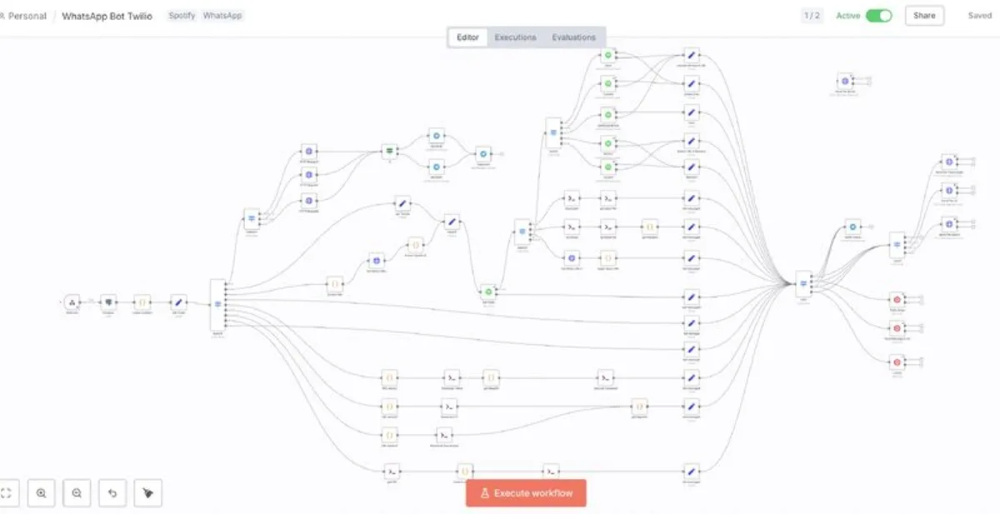

Spotify queue bot
A shared Spotify link hijacks the speaker and kills the queue. Every time.
Built: forward the song via WhatsApp and the bot appends it cleanly. No interruptions, no hijacked speaker - it has survived every party since.
see the LinkedIn post about the flow ↗